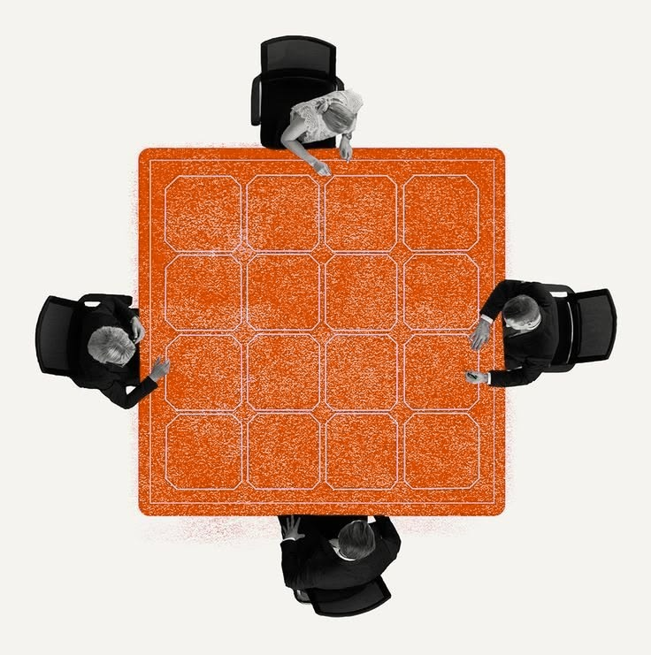
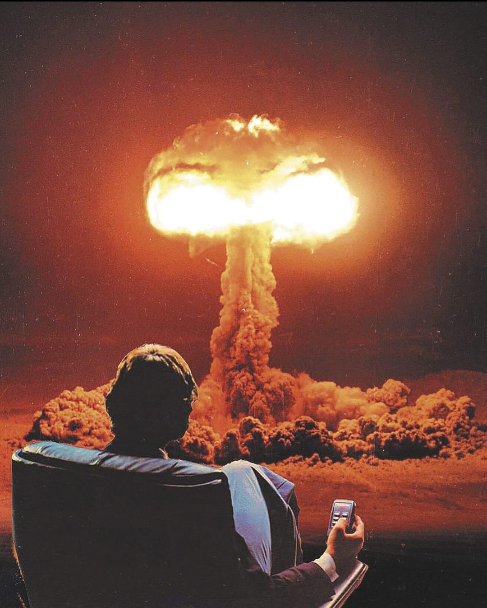
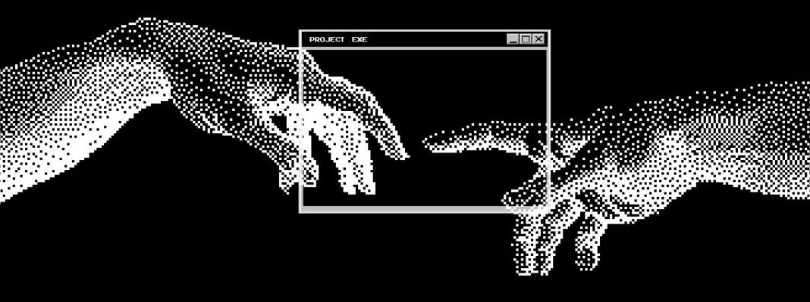

Procesos + IA
Automatizaste el desorden. Ahora es más rápido.
Y nadie sabe por qué sigue fallando.

Procesos + IA
Y nadie sabe por qué sigue fallando.
Un equipo anota pedidos que llegan por WhatsApp, correo y llamada, cada quien a su manera. Si conectas un agente a eso, aprende seis formas de anotar.

Pregunta 1 de 3
Si dos personas resuelven el mismo caso distinto, no hay un proceso. Hay dos costumbres. Elige una antes de automatizar.


Pregunta 2 de 3
Todo proceso falla alguna vez. Define quién lo ve y qué se hace en ese momento. Si la respuesta es "nadie", el error se acumula.
Pregunta 3 de 3
Sin una medida clara, la automatización parece útil hasta que alguien revisa los resultados a mano. Elige una señal: tiempo, error o costo.

Quién decide, qué pasa si falla, cómo se mide. Con eso claro, automatizar sí ahorra tiempo.